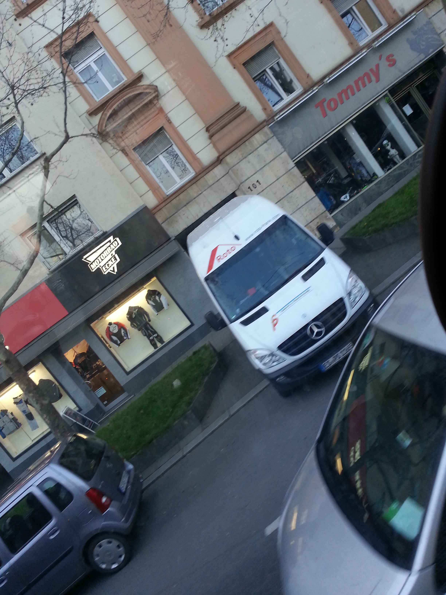
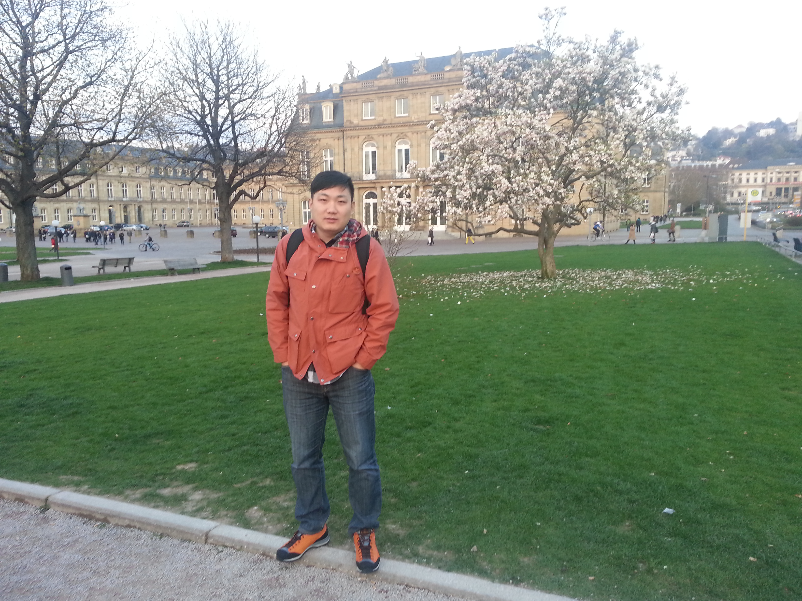
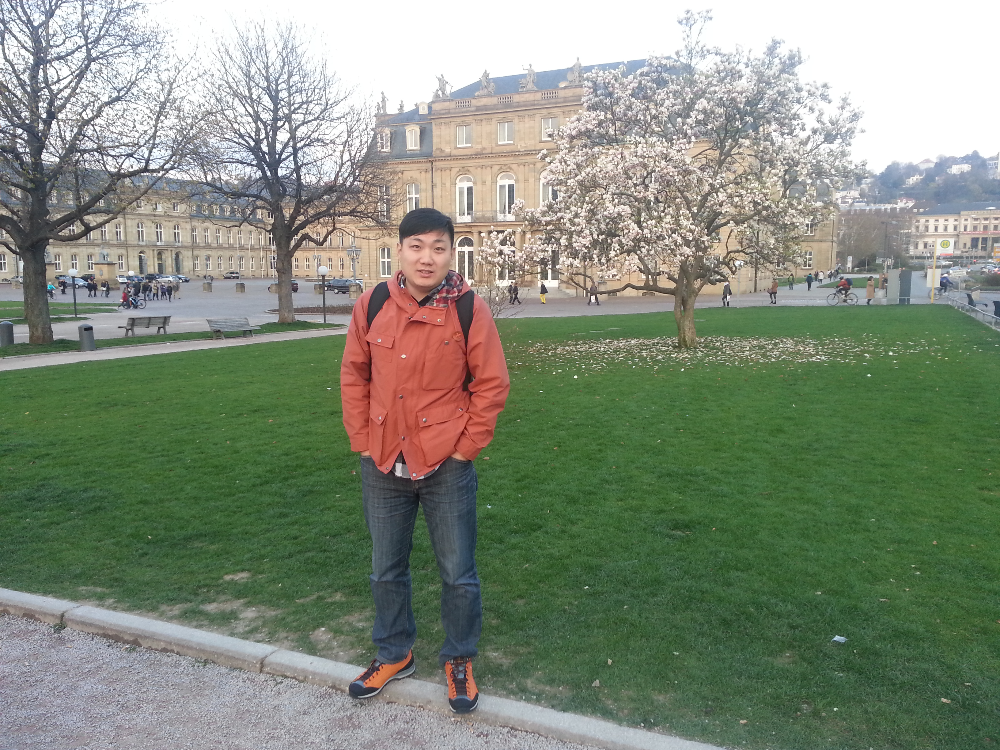
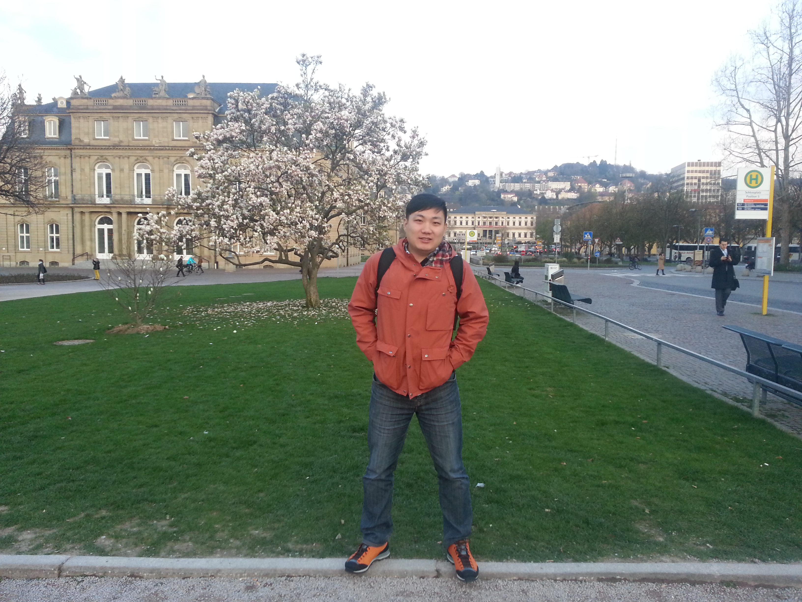
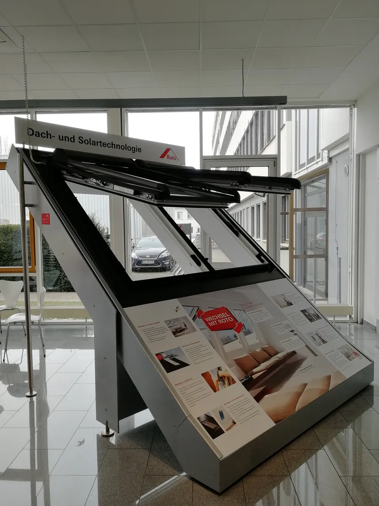

斯图加特·Roto：一个仓库，让我提前十年看到中国物流的未来
Roto Stuttgart — a warehouse that gave me a decade-long head start on understanding where China's logistics could go.

这一篇讲的不是某一次考察，而是很多年反复回到同一个地方的经历。
我在 Roto 担任 General Manager 期间，几乎每次回德国，都会去斯图加特附近的总部。准确说，Roto 的总部在莱因费尔登-埃希特丁根（Leinfelden-Echterdingen），紧挨着斯图加特，创立于 1935 年，由 Wilhelm Frank 和 Elfriede Frank 夫妇创办，做的第一款产品是平开上悬窗五金件。今天 Roto Frank Holding AG 仍然由创始家族完全持有，旗下分成三大独立业务板块：Window and Door Technology（FTT，门窗五金技术）、Roof and Solar Technology（DST，屋顶及太阳能系统技术）、Professional Service（RPS，专业服务）。全球有 18 个生产基地、41 家销售子公司、28 个物流配送中心，员工大约 5000 人，专利数超过 3500 项。
这些数字不是我 2012 年就知道的，是后来慢慢理解、也做了核实的。但它们能说明一件事：我当年反复回去的，不是一家普通的门窗五金厂，而是一家真正意义上的全球化制造企业。
那个仓库
具体是哪一年，我现在已经不愿意硬编。可能是 2014，也可能是 2016 或 2018——反正是我在 Roto 工作期间的某一次。但那个画面，我记得特别清楚。
一个非常高的仓库。全自动化。无人叉车在里面来回穿梭，没有人。
我当时脑子里冒出来的第一反应很朴素：原来制造企业的后台可以做到这个程度。不是产品本身多惊艳，是那套物流和仓储系统给我的冲击——一个企业真正的竞争力，未必写在产品说明书上，可能就藏在你看不到的那层仓库里。
很多年以后，我进了京东工作，再去看中国的物流体系、自动化仓储、供应链发展，会不自觉地想起那个德国仓库。京东后来做到那个水平，已经是很多年以后的事了。这不是说中国落后，是说明那次在斯图加特看到的场景，提前很多年帮我建立了一个参照坐标——原来"先进"可以先进到这个程度，原来这是可以做到的。


客户能看到的是产品，看不到的是仓库；决定一家企业能走多远的，往往是那些客户永远看不到的部分。
——董立鑫 海鑫汇创始人兼执行总裁，新加坡世贸秘书长兼首席运营官
从看产品，到看体系
如果说 2012 年在纽伦堡展会上，我看的还是产品——门窗、五金、玻璃、机械设备。那么在 Roto 内部反复出入总部、产线、仓库的这些年，我看的东西完全变了。
我开始看：一个产品是怎么被设计出来的，标准是怎么内化进企业体系的，生产是怎么组织的，供应链和仓储怎么运行，一个全球化企业又是怎么把自己的体系复制到不同国家市场的。
这和站在展馆里看一圈完全是两种"看"法。展会让你看到一个行业展示出来的东西；真正进入一家企业内部，你才会看到它运行起来的样子。这个差别，我后来在带中国企业做海外考察时，反复用得上——很多企业出海只看到了对方的产品和展位，没有机会看到对方真正的体系，这恰恰是最容易被低估、也最难复制的部分。


今天回头看
今天再去评价当年在 Roto 看到的那套体系，我不会再简单说"德国先进，中国落后"。这些年中国制造业、中国物流体系已经追得很快，某些领域甚至反超。但那次经历真正留给我的，不是"谁比谁强"的结论，而是一个更持久的判断框架：
这个判断，后来贯穿了我做的所有海外产业考察。从德国的仓库，到后来去过的三十多个国家，看的东西越来越多，但骨子里还是在问同一个问题：这个企业 / 这个市场，靠的是什么在支撑它的全球化？
本文整理自董立鑫（Bruce Dong）海外产业考察记录，首发于海鑫汇。